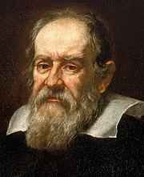
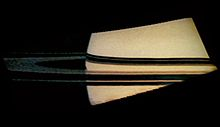
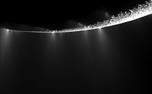

The observation and exploration of Saturn can be divided into three phases. The first phase is ancient
observations (such as with the naked eye), before the invention of modern telescopes. The second phase began in
the 17th century, with telescopic observations from Earth, which improved over time. The third phase is
visitation by space probes, in orbit or on flyby. In the 21st century, telescopic observations continue from
Earth (including Earth-orbiting observatories like the Hubble Space Telescope) and, until its 2017 retirement,
from the Cassini orbiter around Saturn.
Ancient Observations

Saturn has been known since prehistoric times, and in early recorded history it was a major character in
various mythologies. Babylonian astronomers systematically observed and recorded the movements of Saturn. In
ancient Greek, the planet was known as Φαίνων Phainon, and in Roman times it was known as the "star of
Saturn". In ancient Roman mythology, the planet Phainon was sacred to this agricultural god, from which the
planet takes its modern name. The Romans considered the god Saturnus the equivalent of the Greek god Cronus;
in modern Greek, the planet retains the name Cronus—Κρόνος: Kronos.
The Greek scientist Ptolemy based his calculations of Saturn's orbit on observations he made while it was in
opposition. In Hindu astrology, there are nine astrological objects, known as Navagrahas. Saturn is known as
"Shani" and judges everyone based on the good and bad deeds performed in life. Ancient Chinese and Japanese
culture designated the planet Saturn as the "earth star" (土星). This was based on Five Elements which were
traditionally used to classify natural elements.
In ancient Hebrew, Saturn is called Shabbathai. Its angel is Cassiel. Its intelligence or beneficial spirit
is 'Agȋȇl (Hebrew: אגיאל, romanized: ʿAgyal), and its darker spirit (demon) is Zȃzȇl (Hebrew: זאזל,
romanized: Zazl). Zazel has been described as a great angel, invoked in Solomonic magic, who is "effective
in love conjurations". In Ottoman Turkish, Urdu, and Malay, the name of Zazel is 'Zuhal', derived from the
Arabic language (Arabic: زحل, romanized: Zuhal).
Modern NASA and ESA probes
Pioneer 11 flyby
Pioneer 11 made the first flyby of Saturn in September 1979, when it passed within 20,000 km of the planet's
cloud tops. Images were taken of the planet and a few of its moons, although their resolution was too low to
discern surface detail. The spacecraft also studied Saturn's rings, revealing the thin F-ring and the fact
that dark gaps in the rings are bright when viewed at high phase angle (towards the Sun), meaning that they
contain fine light-scattering material. In addition, Pioneer 11 measured the temperature of Titan.
Voyager flybys

In November 1980, the Voyager 1 probe visited the Saturn system. It sent back the first high-resolution
images of the planet, its rings and satellites. Surface features of various moons were seen for the first
time. Voyager 1 performed a close flyby of Titan, increasing knowledge of the atmosphere of the moon. It
proved that Titan's atmosphere is impenetrable in visible wavelengths; therefore no surface details were
seen. The flyby changed the spacecraft's trajectory out from the plane of the Solar System.
Almost a year later, in August 1981, Voyager 2 continued the study of the Saturn system. More close-up
images of Saturn's moons were acquired, as well as evidence of changes in the atmosphere and the rings.
Unfortunately, during the flyby, the probe's turnable camera platform stuck for a couple of days and some
planned imaging was lost. Saturn's gravity was used to direct the spacecraft's trajectory towards Uranus.
The probes discovered and confirmed several new satellites orbiting near or within the planet's rings, as
well as the small Maxwell Gap (a gap within the C Ring) and Keeler gap (a 42 km-wide gap in the A Ring).
Cassini–Huygens spacecraft

The Cassini–Huygens space probe entered orbit around Saturn on 1 July 2004. In June 2004, it conducted a
close flyby of Phoebe, sending back high-resolution images and data. Cassini's flyby of Saturn's largest
moon, Titan, captured radar images of large lakes and their coastlines with numerous islands and mountains.
The orbiter completed two Titan flybys before releasing the Huygens probe on 25 December 2004. Huygens
descended onto the surface of Titan on 14 January 2005.
Starting in early 2005, scientists used Cassini to track lightning on Saturn. The power of the lightning is
approximately 1,000 times that of lightning on Earth.
In 2006, NASA reported that Cassini had found evidence of liquid water reservoirs no more than tens of
meters below the surface that erupt in geysers on Saturn's moon Enceladus. These jets of icy particles are
emitted into orbit around Saturn from vents in the moon's south polar region. Over 100 geysers have been
identified on Enceladus. In May 2011, NASA scientists reported that Enceladus "is emerging as the most
habitable spot beyond Earth in the Solar System for life as we know it".
Cassini photographs have revealed a previously undiscovered planetary ring, outside the brighter main rings
of Saturn and inside the G and E rings. The source of this ring is hypothesized to be the crashing of a
meteoroid off Janus and Epimetheus. In July 2006, images were returned of hydrocarbon lakes near Titan's
north pole, the presence of which were confirmed in January 2007. In March 2007, hydrocarbon seas were found
near the North pole, the largest of which is almost the size of the Caspian Sea. In October 2006, the probe
detected an 8,000 km diameter cyclone-like storm with an eyewall at Saturn's south pole.
From 2004 to 2 November 2009, the probe discovered and confirmed eight new satellites. In April 2013 Cassini
sent back images of a hurricane at the planet's north pole 20 times larger than those found on Earth, with
winds faster than 530 km/h (330 mph). On 15 September 2017, the Cassini-Huygens spacecraft performed the
"Grand Finale" of its mission: a number of passes through gaps between Saturn and Saturn's inner rings. The
atmospheric entry of Cassini ended the mission.
Possible future missions
The continued exploration of Saturn is still considered to be a viable option for NASA as part of their
ongoing New Frontiers program of missions. NASA previously requested for plans to be put forward for a
mission to Saturn that included the Saturn Atmospheric Entry Probe, and possible investigations into the
habitability and possible discovery of life on Saturn's moons Titan and Enceladus by Dragonfly.
 HOME
HOME
 PHYSICAL
PHYSICAL ORBIT&
ORBIT& NATURAL
NATURAL
 REFERENCE
REFERENCE